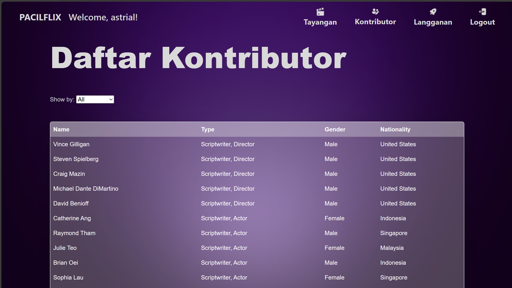

PacilFlix Contributor List page.
This was a project for a database course. We were assigned as a group of three
and were given the same task for each group. The task given in this group project
have main objective to understand database usage rather than making a web application.
The group project were split into 4 parts. The first part is to make an Enhanced Entity
Relationship Diagram (EERD) from a given study case, which is the PacilFlix streaming platform
case. The second part is to make a Relational Model from it. On the third part, we
started making the SQL queries regarding the use cases of the PacilFlix. On my part,
I get to create the queries for customer subscription plan and content data management
features. To be noted is this project required student to not use ORM and use raw SQL
instead. We also started building the app, including the frontend. On the last part, we
completed the app implementation as well as deployment. Then we did UAT (User Acceptance
Test) with a teaching assistant. And by the UAT, we concluded this group project.
This project, especially on the last two parts were focused on writing SQL queries
for the case study. In this project I explored SQL up to basic select and insert, created
the necessary database schema, used triggers to initiate automated procedure, implemented multi
table joins, nested queries and conditional filtering.